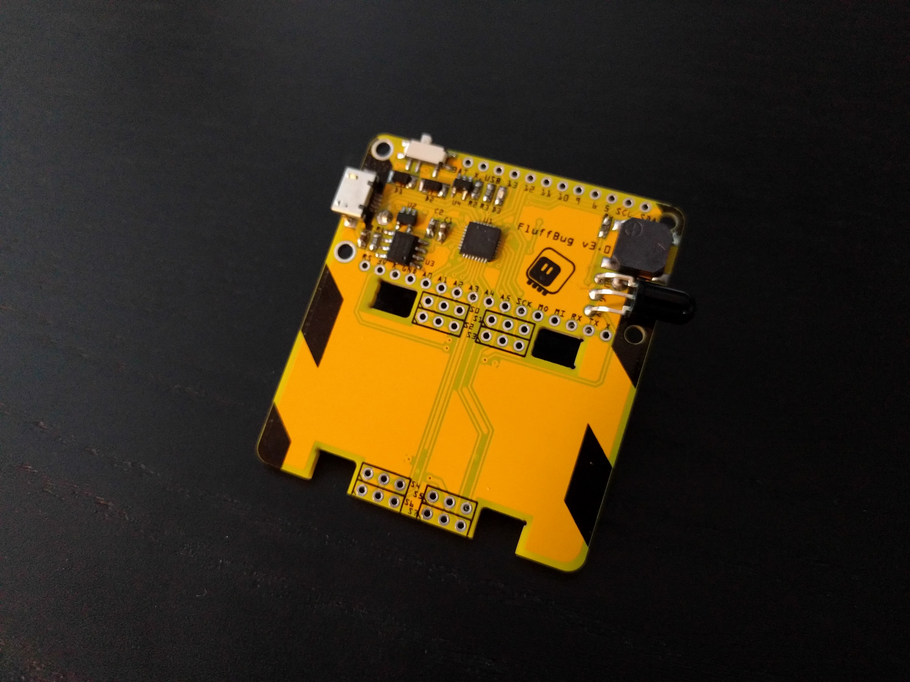
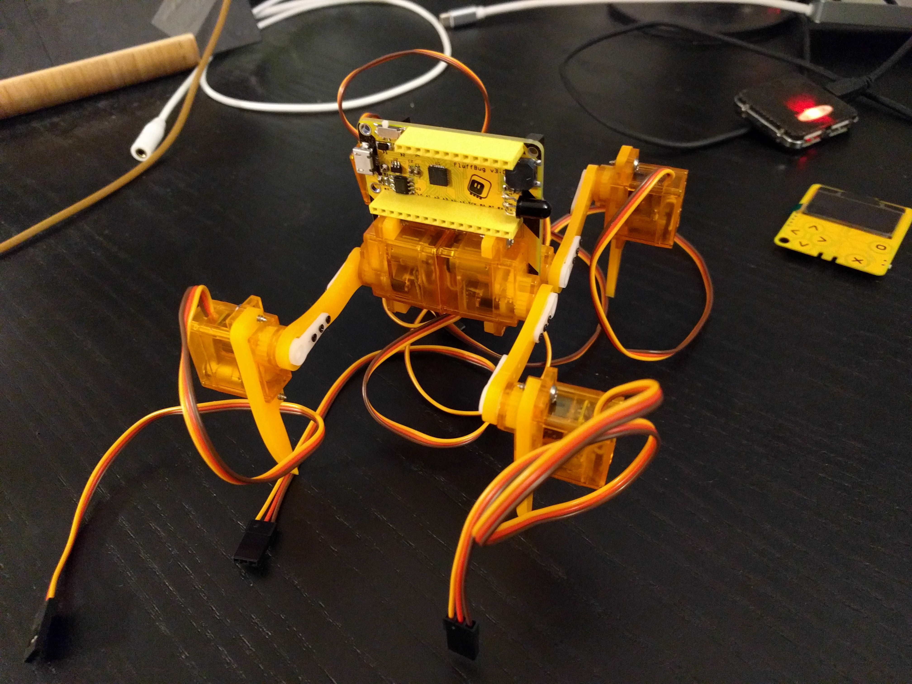

Yellow¶
Published on 2021-06-12 in Fluffbug.
The version 3 PCB has arrived, and populating it wasn’t too bad. I didn’t even use the hot air gun to solder the QFN chip — just drag- soldering it on all sides did the trick.
Along with the new PCB I also received the parts for the new design of the legs. They are pretty much the same as the old, but use a little bit less space. And I got them made in yellow acrylic, to match the PCB. I also managed to find some orange servos, and I dug out some yellow pin headers:
I’m wondering if I should remove those white servo horns and spray- paint them black, to complete the look.
Tomorrow I’m going to cut the servo cables and connect them to the board.